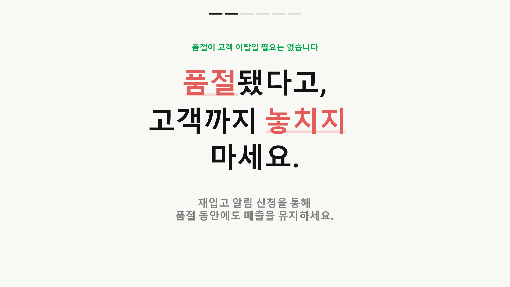
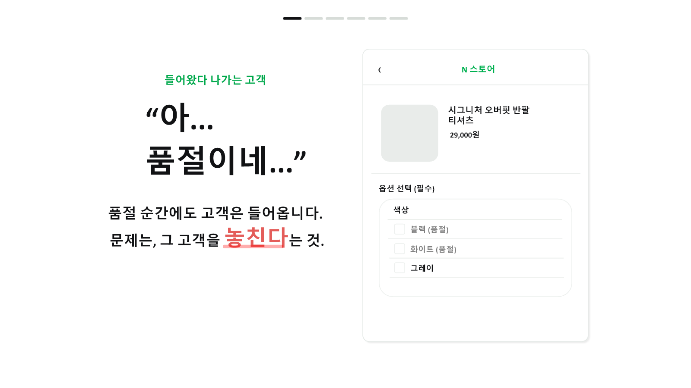
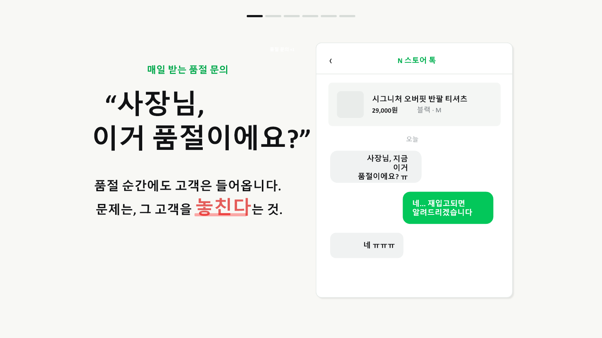
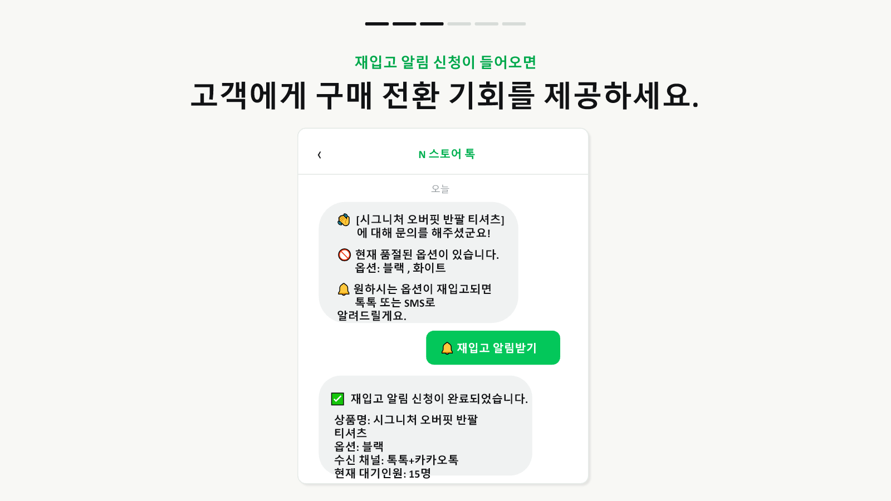
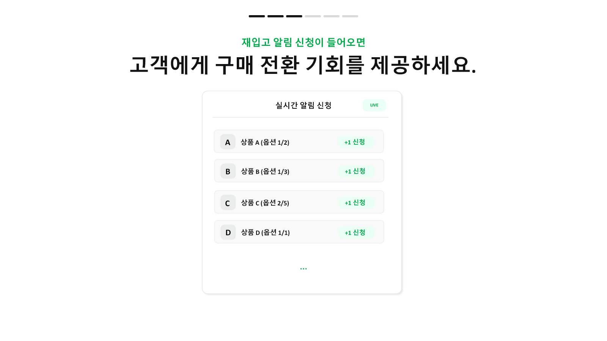
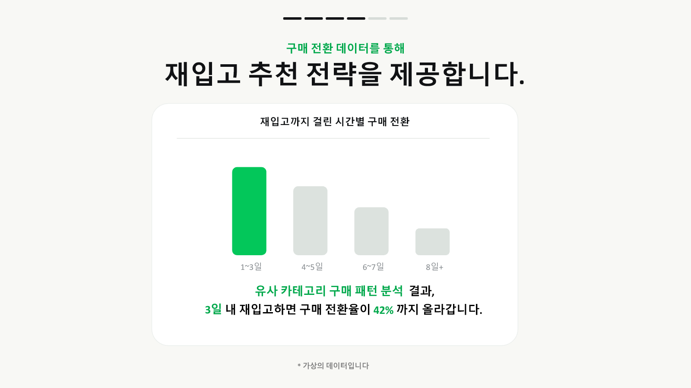
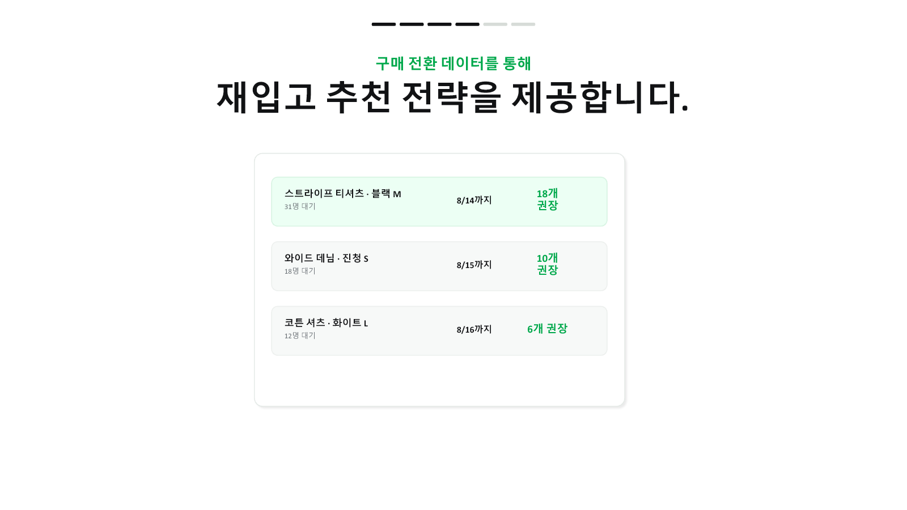
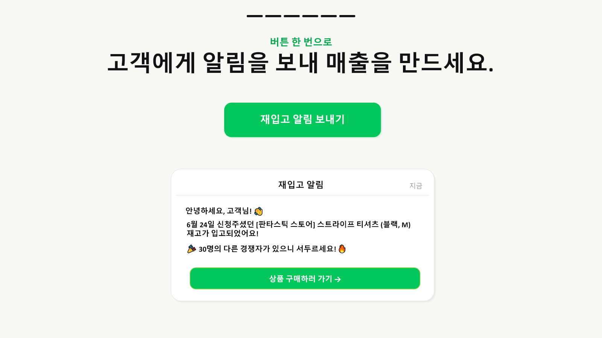

어떤 서비스인지
화면으로 먼저 확인하세요.
아래 이미지는 제공해주신 PPT 원본 화면입니다. 고객이 겪는 품절 순간부터 셀러가 받는 데이터와 재입고 알림까지 순서대로 보여줍니다.

품절 고객이 사라지는 순간
고객은 원하는 옵션이 없으면 문의하거나 스토어를 떠납니다.


고객 경험신청 화면

셀러가 보는 것대기 수요

셀러가 얻는 것재입고 판단



다음은
직접 작동할 차례입니다.
브랜드스토어 데모에서 고객 신청부터 재고 반영, 톡톡 발송과 보고서까지 같은 순서로 확인합니다.
1품절 옵션 선택상품 화면
2톡톡 재입고 신청고객 화면
3재고를 0에서 1로 변경재고 관리
4알림과 보고서 확인결과 확인
데모 상단에 같은 진행 순서가 계속 표시됩니다.